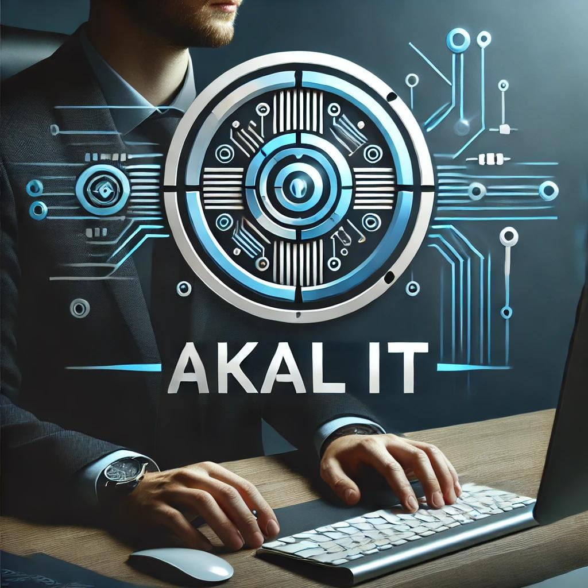

Overland Park, Kansas, USA
info@akalit.us
 AKAL IT
Home
About
Services
Contact
Creative & Innovative
DELIVERING EXCELLENCE IN IT SERVICES
Contact Us
Creative & Innovative
DELIVERING EXCELLENCE IN IT SERVICES
Contact Us
Previous
Next
Service Name
Service description will appear here.
Service details will appear here.
Back to Home